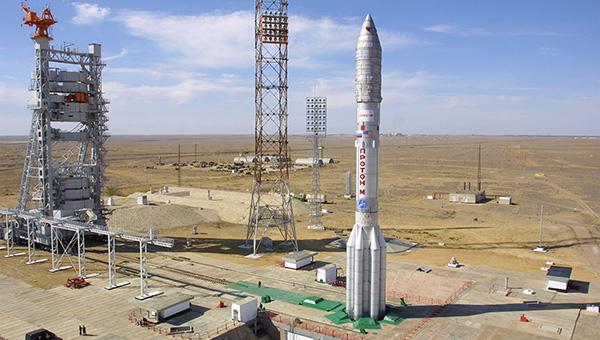
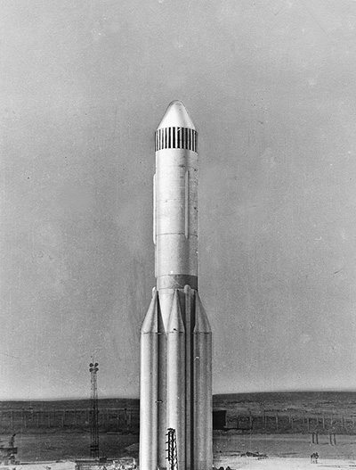
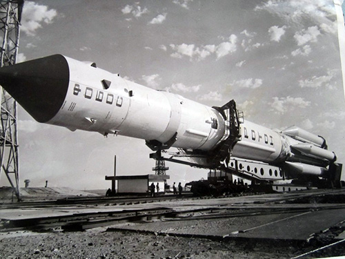
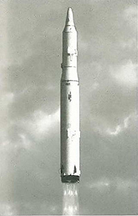
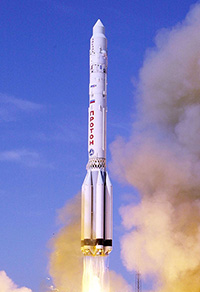
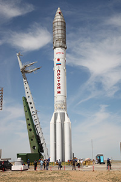

«Протон» (УР-500 — Универсальная ракета, «Протон-К», «Протон-М») — ракета-носитель (РН) тяжёлого класса, предназначенная для выведения автоматических космических аппаратов на орбиту Земли и далее в космическое пространство. Способна выводить на геостационарную орбиту (ГСО) грузы до 3,3 т. Разработана в 1961—1967 годах в подразделении ОКБ-23 (ныне ГКНПЦ имени М. В. Хруничева), являвшемся частью ОКБ-52 В. Н. Челомея.
В начале 1960-хх годов космическая гонка между СССР и США достигла апогея. Исследования космического пространства и появление огромного количества новых технологий и методик делало еще недавно разработанные ракеты морально устаревшими. Уже к началу 1960-хх руководство СССР приняло решение о создании нового поколения ракет, способных выводит в космос как большую полезную нагрузку, так и тяжелые сверхмощные ядерные заряды.В конкурсе участвовали основные конструкторские школы: ОКБ Королева предложило ракету Н-1, ОКБ Янгеля тяжелую ракету Р-56, а ОКБ №52 под руководством Челомея предложило семейство ракет под наименованием УР – Универсальная Ракета. Челомей планировал создать сразу 4 унифицированные ракеты: легкую МБР УР-100, среднюю МБР УР-200, тяжелый носитель УР-500 и сверхтяжелый носитель УР-700. По итогу конкурса было решено отказаться от варианта легкой ракеты. ОКБ №52 получило заказ на среднюю МБР и тяжелый носитель. Заказ на сверхтяжелый носитель получил Королев со-своей Н-1. Изначально, УР-500 предполагал «пакетную» схему, составленную из четырех параллельно соединенных ракет УР-200, с третьей ступенью, так же созданной на базе УР-200. Со-временем от такой схемы отказались в пользу тандемной, хотя верхние ступени все же были созданы из УР-200. Ракета создавалась как гражданская – для доставки в космос тяжелых грузов, так и военная – в качестве стратегического носителя сверхтяжелых бомб мощностью до 150 мегатонн. Для этого ракета должна была быть весьма мощной, т.к., например, созданная в 1961 году водородная бомба АН602 (знаменитая Кузькина мать или Царь-бомба) мощностью 58 мегатонн весила 26,5 тонн и не помещалась в фюзеляже бомбардировщика Ту-95. Для УР-500 были адаптированы двигатели РД-253, разработанные в КБ Глушко. В свое время этот двигатель был отвергнут Королевым в проекте Н-1 из-за применяемого в нем токсичного топлива. Было решено применить эту технологию с УР-500, хотя токсичность топлива до сих пор является главной претензией к ракетам Протон.Над проектом надвисла серьезная опасность закрытия после отставки поддерживавшего его Хрущева. Проект УР-200 был закрыт, как дублировавший уже действующие проект МБР Р-9. Однако, после длительного противостояния политиков и инженеров УР-500 было решено сохранить в гражданской версии. Первый пуск двухступенчатой версии УР-500 совершил в 1965 году с грузом массой в 8,4 тонны. Всего, за 1965-1966 годы было осуществлено 4 запуска, доставивших в космос спутники Протон. Изначально ракету планировали назвать Геркулес, но из-за того, что первые 2 года УР-500 доставляла в космос спутники Протон, то и ее саму стали так называть. Тогда же началась разработка тяжелой версии Протон-К – уже трехступенчатой для возможности полетов к Луне. Эта ракета взлетела в 1967 году с прототипом будущего корабля для облета Луны. Тем не менее, Лунная программа СССР не увенчалась успехом: из 11 запусков Протона-К и лунным кораблем полностью успешным признали только 1, а всего из 21 запуска Протона-К успешными признали лишь 6. Вкупе с неудачными запусками ракет Н-1 и тем фактом, что в 1969 году Аполлон-11 достиг Луны, в СССР программа была свернута. Из-за высокой аварийности и большого количества доработок Протон-К была принят на вооружение только к 1978 году после 61 осуществленного пуска. Протон-К использовалась для запуска различных научных, военных и гражданских космических аппаратов. Ракета использовалась для выведения полезной нагрузки на низкие орбиты, четырёхступенчатый — для выведения космических аппаратов на высокие. В зависимости от модификации ракета была способна вывести до 21 т полезной нагрузки на орбиту высотой 200 км и до 2,6 т на геостационарную орбиту. В первом десятилетии XXI века ракета Протон-К сменилась модернизированной версией Протон-М, которая успешно эксплуатируется в России.
УР-500
Базовая УР-500 была двухступенчатой ракетой, у которой первая ступень – более мощная, была разработана специально, а вторая ступень унаследована от УР-200.
 Ракета могла вывести до 8,4 тонн груза на низкую орбиту.
Первая ступень семиблочная: один центральный, окруженный шестью боковыми блоками. Центральный блок включает хвостовой отсек, переходный отсек и бак окислителя, двигателей нет.Боковые блоки содержат хвостовые отсеки с двигателями РД-253, топливных баков и передних отсеков.
Вторая ступень состоит из переходного, топливного и хвостового отсеков. Оснащается тремя двигателями РД-0210 и одним РД-0211 (может обеспечивать наддув топливных баков).
Протон-К
Появление модификации Протон-К потребовало внести ряд изменений во вторую ступень базовой ракеты для обеспечения возможности добавления третьей и четвертой ступени.

Это позволило увеличить массу полезной нагрузки и работать на более высоких орбитах.
Мощность двигателей первой ступени была увеличена на 7,7% (обновленные двигатели получили индекс РД-275).
Во второй ступени были увеличены топливные баки и изменилась конструкция переходного отсека между первой и второй ступенями.
Третья ступень – новая для УР-500 – состоит из приборного, топливного и хвостового отсеков. Ее разработали на базе второй ступени, но укоротили и установили 1 двигатель РД-0212 + небольшой рулевой двигатель РД-0214.
Протон-М
К 2012 году основной ракетой России стала обновленная модификация Протон-М. Она создана на базе модификации «К», но в нее был внесен ряд изменений, в первую очередь, в систему управления. Благодаря этому ракета эффективнее сжигает топливо, отработанные ступени возвращаются на Землю более точно, получает возможность маневрировать в космосе, а так же позволяет устанавливать более габаритные грузы.
 Так же двигатели РД-275 были заменены на РД-276, что увеличило на 650 кг массу забрасываемого на ГПО груза.
Все ступени используют топливо, составленное из несимметричного диметилгидразина (НДМГ или гептил) и тетраоксида азота. Это топливо позволило упростить двигатели, но считается крайне токсичным.
Разгонные блоки
Для окончательного выведения груза на орбиту и маневрирования в космосе используются разгонные блоки ДМ и Бриз-М.
Блок ДМ (изначально Блок Д) создавался в ОКБ-1 Королева. После модернизации до версии ДМ блок мог работать в космосе до 9 часов с тремя возможными запусками. Сейчас на его базе создаются новые модификации.
Блок Бриз-М предназначен для ракет Протон-М и Ангара и является универсальной и наиболее активно применяющейся системой. Блок позволяет увеличить массу нагрузки до 3,5 тонн на ГСО. Впервые был запущен в 2001 году.
Начиная с 1967 года, было произведено 404 пуска РН «Протон». Из них 49 закончились неудачей во время работы первых трёх ступеней и разгонного блока.